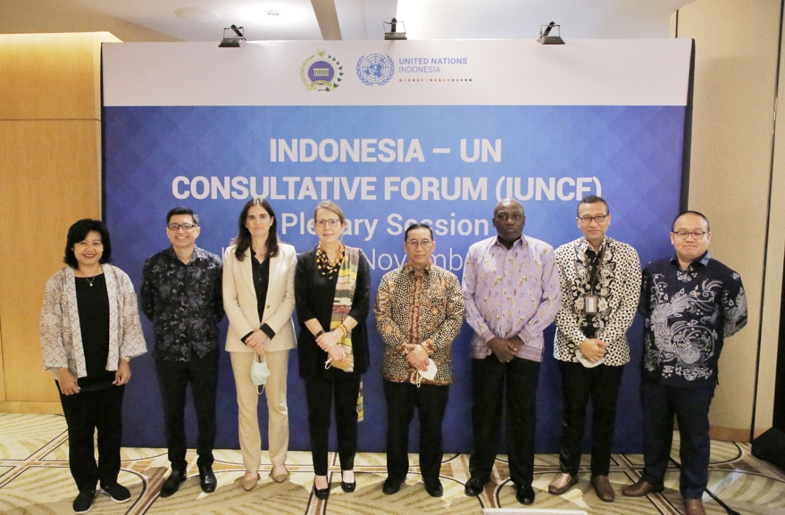
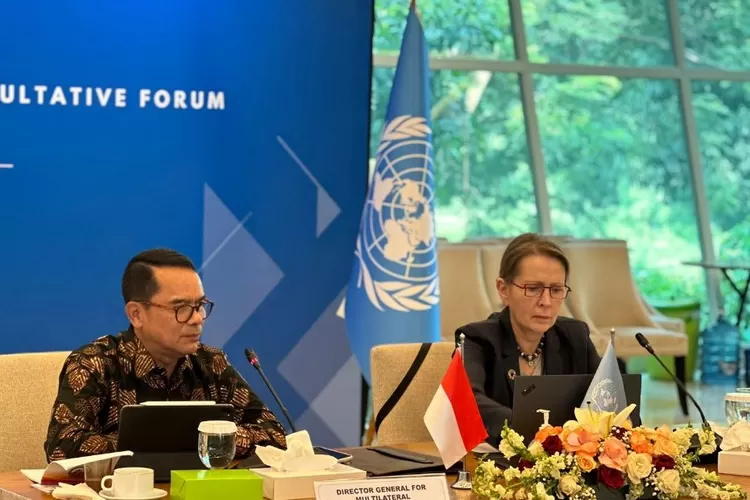

Kerjasama multilateral adalah kerjasama yang melibatkan 3 negara atau lebih. Kerjasama ini sering kali dilaksanakan melalui organisasi internasional, untuk bekerja sama dalam mencapai mencapai tujuan bersama atau mengatasi isu global. Biasanya, kerjasama ini dilakukan untuk mencapai tujuan dan keuntungan di bidang ekonomi, sosial, lingkungan, dan keamanan, serta bertujuan untuk mencapai kepentingan bersama melalui kesepakatan yang mengikat semua pihak yang terlibat.
 Dalam hal ini, Indonesia sudah berperan aktif membangun hubungan antar negara sekaligus mencapai sdgs 4 yaitu, Pendidikan yang Berkualitas. Dimana Indonesia merupakan anggota aktif PBB dan sudah berkomitmen pada agenda global SDGs 2030. Dimana Indonesia dan PBB membuat perjanjian yang menghasilkan sebuah kerangka disebut, Indonesia-United Nations Sustainable Development Cooperation Framework (UNSDCF) 2026-2030. Dimana, kerangka ini merupakan panduan kemitraan strategis untuk mempercepat pencapaian target. Salah satu target yang dimakasud adalah meningkatkan kualitas pendidikan di Indonesia. Dimana dari kerja sama ini keduanya mendapatkan keuntungan. Indonesia menerima bantuan teknis, pelatihan, dan berbagi ilmu teknologi dari PBB, sehingga warga Indonesia bisa meningkatkan sumber daya manusianya. Sedangkan PBB mendapatkan keberhasilan implementasi agenda global. Dimana PBB membutuhkan dukungan dari negara-negara besar seperti, Indonesia untuk membuktikan bahwa program 2030 dapat dicapai secara global. Sehingga, jika Indonesia berhasil mencapai target SDGs, bisa menjadi bukti nyata bahwa kerangka PBB memang efektif.
dan Berdampak Bagi Sesama!✨🤝🎯